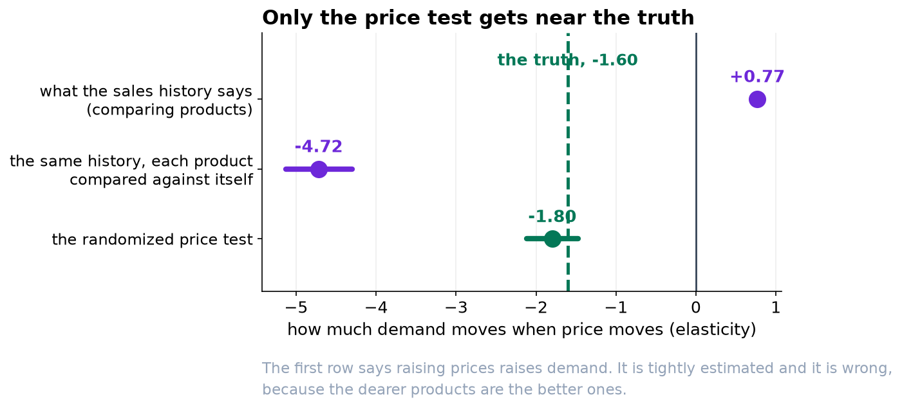
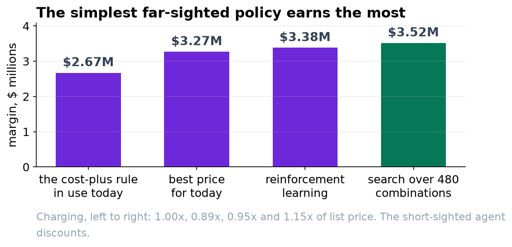

We Think Prices Should Go Up, and We Want an Experiment Before They Do.
Twenty weeks of sales history could not tell us what a price change does. Six weeks of a randomized test could, and it points the opposite way to the promotions calendar.
Recommendation
Do not switch on an automated pricing agent yet. Run a second price test first. Our best estimate is that a modest, steady price increase on this range is worth around 30 percent more margin than today's cost-plus rule over six months. That is a large enough claim, and rests on a short enough experiment, that it should be tested on a slice of the range before it is applied to all of it.
Why the sales history could not answer the question
The first thing we did was the obvious thing: look at twenty weeks of prices and sales and see what happens to units when price changes. The answer came back that higher prices sell more, with a very small margin of error.
That is not a discovery about customers. Prices on this range are set by a fixed markup over cost, and the products that cost more to make are the better products. So comparing a 90 dollar item with a 15 dollar item compares two different products, not two different prices for the same one.
Comparing each product only against itself gives a sensible-looking answer, and it is still about three times too strong. The only time a price on this range moves is the sitewide sale every fifth week, and the sale never goes out on its own: it goes out with the email and the homepage banner. The analysis cannot tell the price cut apart from the marketing that arrives with it, so it credits the whole of the uplift to the discount.

What the price test bought
The six-week randomized test gave every product a randomly chosen price each week, from 15 percent below list to 15 percent above. That is the only part of this data where a price change is not tangled up with something else, and it is where every number below comes from.
| What we learned | Estimate |
|---|---|
| How much a permanent price change moves demand | about -1.8 percent per percent |
| How much extra a price change moves demand in the first few weeks | about -2.1 percent per percent |
| Why the two differ | customers get used to whatever you charge |
The finding that runs against the promotions calendar
Those two numbers are the whole argument, and the gap between them is what makes promotions look better than they are.
A price cut works hard for the first fortnight, because customers are comparing today's price with what they expected to pay. Keep the cut going and their expectation slides down to meet it, the extra lift disappears, and what is left is the same volume at a lower price. In our simulation a ten percent cut is ahead of holding list price for about twelve days and behind it for the rest of the six months.
We built an agent that picks the best price for today and nothing else. It cuts prices by about ten percent, because that is genuinely the best thing to do today. Over six months it earns 7.6 percent less than one that plans ahead and raises prices instead. The mistake is not in the arithmetic; it is in the horizon.

Why we are not recommending the clever version
We built a reinforcement learning agent as well, the kind that adjusts price to circumstances rather than setting one. It lost to a simple search over every product and every price point, at every setting we tried.
The reason is worth a sentence because it is not a technical failure. The agent learned to chase the price customers expect: discount when they expect a lot, raise when they expect little. Every one of those moves is right for that day, and together they keep prices oscillating around a middle level instead of settling at a higher one. Simpler was better here, and we would rather ship the version we can explain to you in a paragraph.
What we want to test, and why
Our recommended policy raises prices on this range by around fifteen percent. Three reasons not to just do it.
Competitors are not in our model. Nothing in six weeks of our own sales tells us what happens when a customer compares our new price with somebody else's unchanged one. This is the largest gap and it is not closable with the data we have.
The estimates rest on six weeks. They are the best we have and they are not much. The margin of error on the permanent price response spans roughly -1.5 to -2.1, and a policy that is right at one end of that range is not obviously right at the other.
A fifteen percent increase is a decision about customer trust, not only about margin, and a six-month simulation is not equipped to see that part.
Run the increase on a randomly chosen half of the range for eight weeks, keep the other half on the current rule, and keep a small randomized slice running permanently after that. The permanent slice is what lets us evaluate any future pricing change before it goes live rather than after, and it costs very little: exploring one day in twenty cost under one percent of margin in our tests.